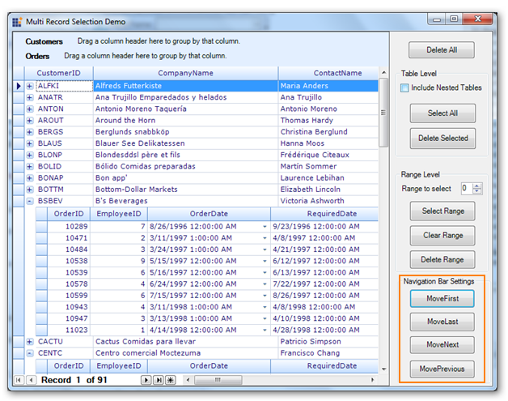

The GridGrouping control now provides four types of built-in navigation support, enabling users to navigate to the first record, last record, previous record, and next record.
Use Case Scenarios
When you have lots of records in your application, this feature helps you easily navigate to the required record.
Methods
Table 11: Methods Table
|
Method |
Description |
Parameters |
Type |
Return Type |
Reference links |
|
MoveFirst() |
This Method is used to navigate to the first record. |
N/A |
method |
void |
N/A. |
|
MoveLast() |
This method is used to navigate to the last record. |
N/A |
method |
void |
N/A |
|
MoveNext() |
This method is used to navigate to the next record. |
N/A |
method |
void |
N/A |
|
MovePrevious() |
This method is used to navigate to the previous record. |
N/A |
method |
void |
N/A |
Sample Link
A demo of this feature is available in the following location:
..\..\AppData\Local\Syncfusion\EssentialStudio\{Installed Version}\Windows\Grid.Grouping.Windows\Samples\2.0\Selection\Multi Record Selection Demo
Adding Navigation Bar to the RecordNavigationControl
The following are steps to add navigation bar:
1. Enable navigation bar by setting the ShowNavigationBar property to true. The following code illustrates this:
|
[C#]
this.gridGroupingControl1.ShowNavigationBar = true; |
|
[VB]
Me.gridGroupingControl1.ShowNavigationBar = True |
2. Call the methods for navigation bar i.e., MoveFirst(), MoveLast(), MoveNext() and MovePrevious() methods. The following code illustrates this:
|
[C#] //This property should set to true to show the navigation bar this.gridGroupingControl1.ShowNavigationBar = true; //This method is used to navigate the first record this.gridGroupingControl1.RecordNavigationBar.MoveFirst(); //This method is used to navigate the last record this.gridGroupingControl1.RecordNavigationBar.MoveLast(); //This method is used to navigate the next record this.gridGroupingControl1.RecordNavigationBar.MoveNext(); //This method is used to navigate the previous record this.gridGroupingControl1.RecordNavigationBar.MovePrevious();
|
|
[VB] 'This property should set to true to show the navigation bar Me.gridGroupingControl1.ShowNavigationBar = True 'This method is used to navigate the first record Me.gridGroupingControl1.RecordNavigationBar.MoveFirst() 'This method is used to navigate the last record Me.gridGroupingControl1.RecordNavigationBar.MoveLast() 'This method is used to navigate the next record Me.gridGroupingControl1.RecordNavigationBar.MoveNext() 'This method is used to navigate the previous record Me.gridGroupingControl1.RecordNavigationBar.MovePrevious() |

Figure 440: Navigation Bar